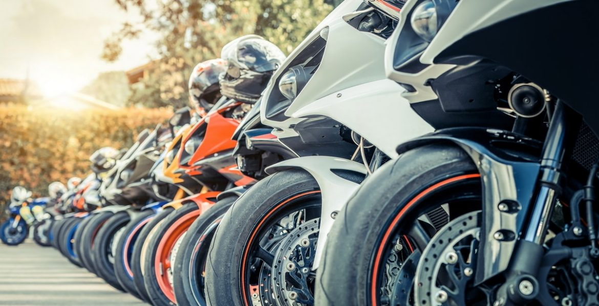
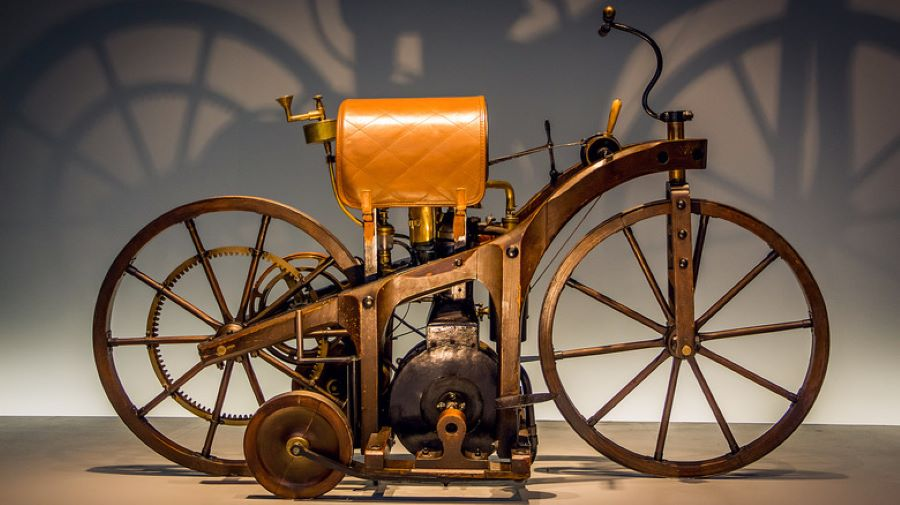

Motocicletas

Las motocicletas son uno de los medios de transporte más emocionantes y populares del mundo. Gracias a su velocidad, economía y facilidad de uso, millones de personas utilizan motocicletas diariamente para transportarse, viajar y disfrutar de aventuras inolvidables.
En este sitio web conocerás la historia de las motocicletas, las motos más rápidas del mundo, las marcas más importantes, las tecnologías modernas, las mejores rutas para viajar y las opciones de personalización más populares.
El motociclismo es mucho más que un medio de transporte; representa libertad, pasión, aventura y una cultura compartida por millones de personas alrededor del planeta.
Historia de las Motocicletas

La historia de las motocicletas comenzó durante el siglo XIX cuando varios inventores intentaron combinar bicicletas con motores de combustión.
En 1885, Gottlieb Daimler y Wilhelm Maybach desarrollaron uno de los primeros vehículos motorizados de dos ruedas, considerado por muchos historiadores como el antecedente directo de la motocicleta moderna.
Durante el siglo XX las motocicletas evolucionaron rápidamente gracias al avance de la ingeniería mecánica. Marcas como Harley-Davidson, BMW, Honda, Yamaha, Kawasaki y Ducati comenzaron a desarrollar modelos más rápidos, seguros y eficientes.
Las motocicletas fueron utilizadas durante guerras, competencias deportivas, transporte urbano y viajes de aventura, convirtiéndose en parte importante de la historia del transporte mundial.
Actualmente existen motocicletas deportivas, touring, adventure, naked, custom, enduro y muchos otros tipos diseñados para necesidades específicas.
Video del Mundo de las Motocicletas
Observa este video sobre motocicletas.
Audio de una Motocicleta
Escucha el sonido característico de una motocicleta deportiva.
Evolución de las Motocicletas
| Periodo | Características |
|---|---|
| 1885 - 1900 | Primeros prototipos con motor. |
| 1900 - 1950 | Popularización y uso militar. |
| 1950 - 1980 | Expansión de marcas japonesas. |
| 1980 - 2000 | Aparición de superbikes modernas. |
| 2000 - Actualidad | Electrónica avanzada y máxima tecnología. |
Tipos de Motocicletas
- Deportivas.
- Naked.
- Touring.
- Adventure.
- Enduro.
- Motocross.
- Custom.
- Scooters.
¿Por qué son tan populares?
- Menor consumo de combustible.
- Facilidad de movilidad.
- Costos reducidos.
- Sensación de libertad.
- Gran variedad de modelos.
- Perfectas para viajes y aventuras.
Enlaces del Sitio
Conoce las motos más rápidas del mundo